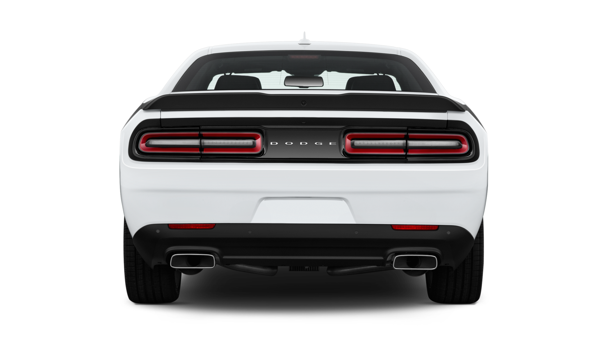

ПОСЛЕДНИЕ АВТОНОВОСТИ И НОВИНКИ
Новости Dodge, которые могут заинтересовать поклонников марки, информация о новинках Dodge, рекорды и
достижения – обо всем этом рассказывает раздел «Автоновости и новинки Dodge». Мы всегда стараемся писать
обо всех событиях первыми, общаемся с представителями заводов-изготовителей, посещаем все значимые
выставки, презентации и тест-драйвы. Поэтому наши читатели получают самые свежие новости о Dodge, могут
увидеть все актуальные фото новых моделей и узнать обо всех новинках Dodge, а также планах руководства
Dodge. Заглядывайте на страницу новостей Dodge, и вы всегда будете в курсе всех значимых событий этого
бренда, а также запусков новых моделей.

Апрель 2022
ПРЕДСТАВЛЕН ДОРАБОТАННЫЙ DODGE RAM
Данные машины любят всей душой, а конструировать из них монстров – и подавно. Наиболее громко на данном поприще смогло заявить о себе ателье Hennessey. Мастера из США ежегодно показывают тот или иной заряженный пикап на базе Ford или Dodge, но нынешний проект можно назвать уникальным Во-первых, перед нами трехосная машина. Да, модели удлинили грузовую платформу и добавили еще одну пару колес. К слову, третья ось здесь тоже является ведущей, так что с колесной формулой 6х6 автомобиль должен легко покорять любое бездорожье. В результате мы имеем пикап, чья длина превышает семь метров. Занятно, но в Hennessey называет новую разработку самым большим автомобилем за 30 летнюю историю ателье. Во-вторых мастера «перетряхнули» подвеску машины, установив усиленные амортизаторы. Кроме того были произведены работы и с двигателем – шестилитровый V8 оснастили новым нагнетателем, новой системой впуска и перепрошитым ЭБУ. В результате мотор стал развивать более тысячи лошадиных сил (712 в стоке).
Данные машины любят всей душой, а конструировать из них монстров – и подавно. Наиболее громко на данном поприще смогло заявить о себе ателье Hennessey. Мастера из США ежегодно показывают тот или иной заряженный пикап на базе Ford или Dodge, но нынешний проект можно назвать уникальным Во-первых, перед нами трехосная машина. Да, модели удлинили грузовую платформу и добавили еще одну пару колес. К слову, третья ось здесь тоже является ведущей, так что с колесной формулой 6х6 автомобиль должен легко покорять любое бездорожье. В результате мы имеем пикап, чья длина превышает семь метров. Занятно, но в Hennessey называет новую разработку самым большим автомобилем за 30 летнюю историю ателье. Во-вторых мастера «перетряхнули» подвеску машины, установив усиленные амортизаторы. Кроме того были произведены работы и с двигателем – шестилитровый V8 оснастили новым нагнетателем, новой системой впуска и перепрошитым ЭБУ. В результате мотор стал развивать более тысячи лошадиных сил (712 в стоке).
МАРТ 2022
ФИНСКИЕ ВОДИТЕЛИ НЕ СМОГУТ РАСКРЫТЬ ПОЛНЫЙ ПОТЕНЦИАЛ DODGE RAM
Финский дилерский центр Netti Auto выставил на продажу оранжевый Dodge Ram в исполнении Mammoth 1000 TRX. Модифицированный знаменитым тюнинг-ателье Hennessey пикап оценили, эта цифра важна, почти в 250 тысяч евро. Дорого? Может быть, но есть еще один важный нюанс. Потратив такую большую сумму денежных средств, вы не сможете раскрыть весь потенциал машины. Финляндия – страна, которая повернута на экологии и заботе об окружающей среде. Местные законы жестоки и подразумевают, что владелец, покупая заряженную и мощную машину, должен заплатить высокий налог на импорт, в размере 45 процентов от стоимости машины. То есть в случае с Ram вы заплатите за саму машину более двухсот тысяч евро, а потом еще выложите из своего кармана еще сотню. Впрочем, есть лазейка, машину можно зарегистрировать в качестве коммерческого транспорта, но есть ограничение - владелец машины должен установить на машину ограничитель, который не позволит ей разогнаться больше девяноста километров в час.
Финский дилерский центр Netti Auto выставил на продажу оранжевый Dodge Ram в исполнении Mammoth 1000 TRX. Модифицированный знаменитым тюнинг-ателье Hennessey пикап оценили, эта цифра важна, почти в 250 тысяч евро. Дорого? Может быть, но есть еще один важный нюанс. Потратив такую большую сумму денежных средств, вы не сможете раскрыть весь потенциал машины. Финляндия – страна, которая повернута на экологии и заботе об окружающей среде. Местные законы жестоки и подразумевают, что владелец, покупая заряженную и мощную машину, должен заплатить высокий налог на импорт, в размере 45 процентов от стоимости машины. То есть в случае с Ram вы заплатите за саму машину более двухсот тысяч евро, а потом еще выложите из своего кармана еще сотню. Впрочем, есть лазейка, машину можно зарегистрировать в качестве коммерческого транспорта, но есть ограничение - владелец машины должен установить на машину ограничитель, который не позволит ей разогнаться больше девяноста километров в час.
ЯНВАРЬ 2022
В DODGE ИЩУТ СПЕЦИАЛИСТА ПО «ПОНЧИКАМ»
Вы наверняка видели, как на больших парковках торговых центрах, уникальные личности крутят в дыму большие круги. Фактически, это и есть «пончик». Собственно, руководство Dodge ищет подобного умельца. Ему предстоит заняться имиджем марки – создавать те самые «пончики» на различных промо-роликах, посвященных заряженным моделям марки вроде Charger или Challenger в версии SRT Hellcat. Также в обязанности сотрудника будет входить соблюдение дресс-кода (гардероб предоставит компания), посещение разнообразных мероприятий и школы вождения Radford Racing School. Если для кого-то подобная деятельность может стать работой мечты, то спешим предупредить – придется попотеть. Всех претендентов будут отбирать в рамках конкурса, где каждый должен показать все свои водительские навыки
Вы наверняка видели, как на больших парковках торговых центрах, уникальные личности крутят в дыму большие круги. Фактически, это и есть «пончик». Собственно, руководство Dodge ищет подобного умельца. Ему предстоит заняться имиджем марки – создавать те самые «пончики» на различных промо-роликах, посвященных заряженным моделям марки вроде Charger или Challenger в версии SRT Hellcat. Также в обязанности сотрудника будет входить соблюдение дресс-кода (гардероб предоставит компания), посещение разнообразных мероприятий и школы вождения Radford Racing School. Если для кого-то подобная деятельность может стать работой мечты, то спешим предупредить – придется попотеть. Всех претендентов будут отбирать в рамках конкурса, где каждый должен показать все свои водительские навыки